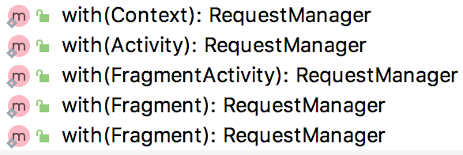

Glide源码分析 - with方法
with方法有多个重载，但代码基本相同 
public static RequestManager with(Activity activity) {
RequestManagerRetriever retriever = RequestManagerRetriever.get();
return retriever.get(activity);
}
RequestManagerRetriever是个单例
public RequestManager get(Context context) {
if (context == null) {
throw new IllegalArgumentException("You cannot start a load on a null Context");
} else if (Util.isOnMainThread() && !(context instanceof Application)) {
if (context instanceof FragmentActivity) {
return get((FragmentActivity) context);
} else if (context instanceof Activity) {
return get((Activity) context);
} else if (context instanceof ContextWrapper) {
return get(((ContextWrapper) context).getBaseContext());
}
}
return getApplicationManager(context);
}
get方法也有多个重载
public RequestManager get(Activity activity) {
if (Util.isOnBackgroundThread() || Build.VERSION.SDK_INT < Build.VERSION_CODES.HONEYCOMB) {
return get(activity.getApplicationContext());
} else {
assertNotDestroyed(activity);
android.app.FragmentManager fm = activity.getFragmentManager();
return fragmentGet(activity, fm);
}
}
从重载方法可以看出，如果传入的context为application 或者 当前线程不在主线程(isOnBackgroundThread)，则通过调用getApplicationManager返回，否则都调用fragmentGet方法返回RequestManager。
我们后面会知道Glide通过fragment感知界面生命周期，所以我们开发过程中，应该确认context不为applicationContext，且在主线程调用，否则将失去Glide对界面生命周期感知这一功能。
感知生命周期有什么好处呢？ Glide对于图片请求会在onStop的时候自动暂停，然后在onStart的时候重新启动，gif的动画也会在onStop的时候停止，以免在后台消耗电量。
RequestManager fragmentGet(Context context, android.app.FragmentManager fm) {
RequestManagerFragment current = getRequestManagerFragment(fm);
RequestManager requestManager = current.getRequestManager();
if (requestManager == null) {
//传入Lifecycle接口，让requestManager可监听fragment的生命周期
requestManager = new RequestManager(context, current.getLifecycle(), current.getRequestManagerTreeNode());
//requestManager保存在fragment中
current.setRequestManager(requestManager);
}
return requestManager;
}
RequestManagerFragment getRequestManagerFragment(final android.app.FragmentManager fm) {
//先找之前有没有创建
RequestManagerFragment current = (RequestManagerFragment) fm.findFragmentByTag(FRAGMENT_TAG);
if (current == null) {
current = pendingRequestManagerFragments.get(fm);
if (current == null) {
current = new RequestManagerFragment();
//因为添加fragment是异步的，所以先加入pending，避免重复new RequestManagerFragment
pendingRequestManagerFragments.put(fm, current);
fm.beginTransaction().add(current, FRAGMENT_TAG).commitAllowingStateLoss();
handler.obtainMessage(ID_REMOVE_FRAGMENT_MANAGER, fm).sendToTarget();//稍后从penging中移除
}
}
return current;
}
可知，不管加载多少图片，一个activity，总是对应一个有RequestManagerFragment对象，且RequestManagerFragment包含一个RequestManager对象，所以他们的生存期是一样的。
Glide的with方法最终返回了一个RequestManager对象，顾名思义，RequestManager应该是管理Request的，是一个管理者。
load方法显然在RequestManager中，load也是有多个重载方法，可以传入不同类型的参数，以常用的String类型的url为例：
public DrawableTypeRequest<String> load(String string) {
return (DrawableTypeRequest<String>) fromString().load(string);
}
public DrawableTypeRequest<String> fromString() {
return loadGeneric(String.class);
}
private <T> DrawableTypeRequest<T> loadGeneric(Class<T> modelClass) {
ModelLoader<T, InputStream> streamModelLoader = Glide.buildStreamModelLoader(modelClass, context);
ModelLoader<T, ParcelFileDescriptor> fileDescriptorModelLoader =
Glide.buildFileDescriptorModelLoader(modelClass, context);
return optionsApplier.apply(
new DrawableTypeRequest<T>(modelClass, streamModelLoader, fileDescriptorModelLoader, context,
glide, requestTracker, lifecycle, optionsApplier));
}
- modelClass是指输入参数类型，比如我们传入的是String类型的url字符串，则modelClass为String.class
- resourceClass是指数据资源类型，我们从网络上下载图片，图片数据以流的形式存在，则resourceClass为InputStream.class
我们知道Glide在其构造方法中默认注册了一大堆ModelLoader工厂类，比如：
register(String.class, InputStream.class, new StreamStringLoader.Factory());
loadGeneric方法最终创建一个DrawableTypeRequest对象返回，并在其中注入了modelClass，modeLoader，lifecycle等等参数。
public class DrawableTypeRequest<ModelType> extends DrawableRequestBuilder<ModelType>
public class DrawableRequestBuilder<ModelType>
extends GenericRequestBuilder<ModelType, ImageVideoWrapper, GifBitmapWrapper, PicassoDrawable>
public class GenericRequestBuilder<ModelType, DataType, ResourceType, TranscodeType>
DrawableTypeRequest 继承自 DrawableRequestBuilder，DrawableRequestBuilder 又继承自 GenericRequestBuilder。
GenericRequestBuilder中的Generic是指拥有泛型，可见GenericRequestBuilder需要指定4个泛型：
- ModelType: 图片资源地址的类型，如String.class
- DataType: 图片原始数据类型，如InputStream.class
- ResourceType: 图片类型，如Bitmap.class, GifDrawable.class
- TranscodeType: 图片转换后额类型，如Drawable.class
DrawableRequestBuilder 除了ModelType，确定了后三个泛型：
- DataType -> ImageVideoWrapper，包装了InputStream和ParcelFileDescriptor两种类型
- DataType -> GifBitmapWrapper，包装了GifDrawable和Bitmap两种类型
- TranscodeType -> PicassoDrawable，引自于Picasso项目的Drawable类
DrawableTypeRequest 在 DrawableRequestBuilder 区别不大，只是添加了一些额外几个方法而已。 显然DrawableTypeRequest也是个RequestBuilder，既然是Builder，作用就是记录request的各种参数以及类型。